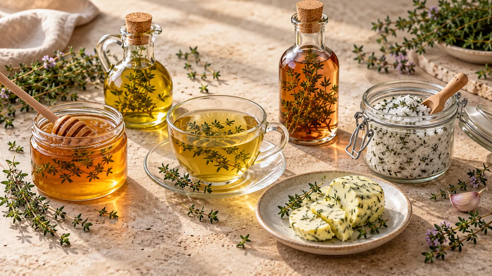
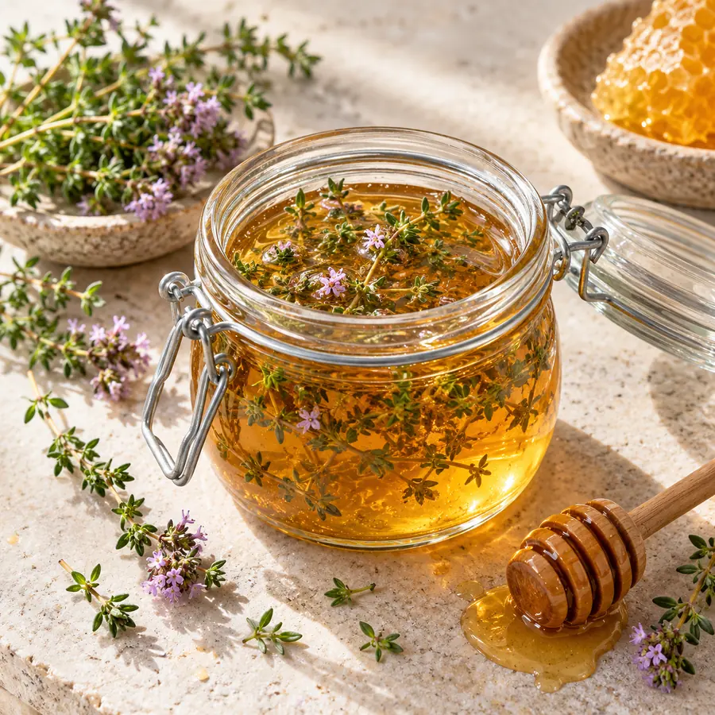
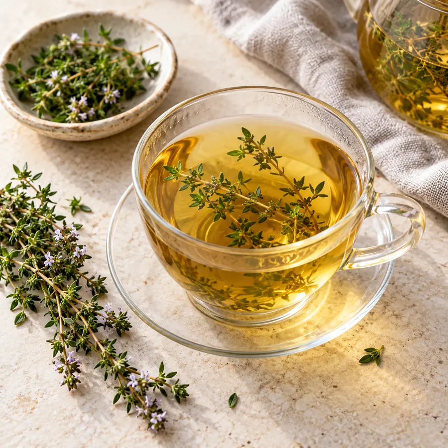
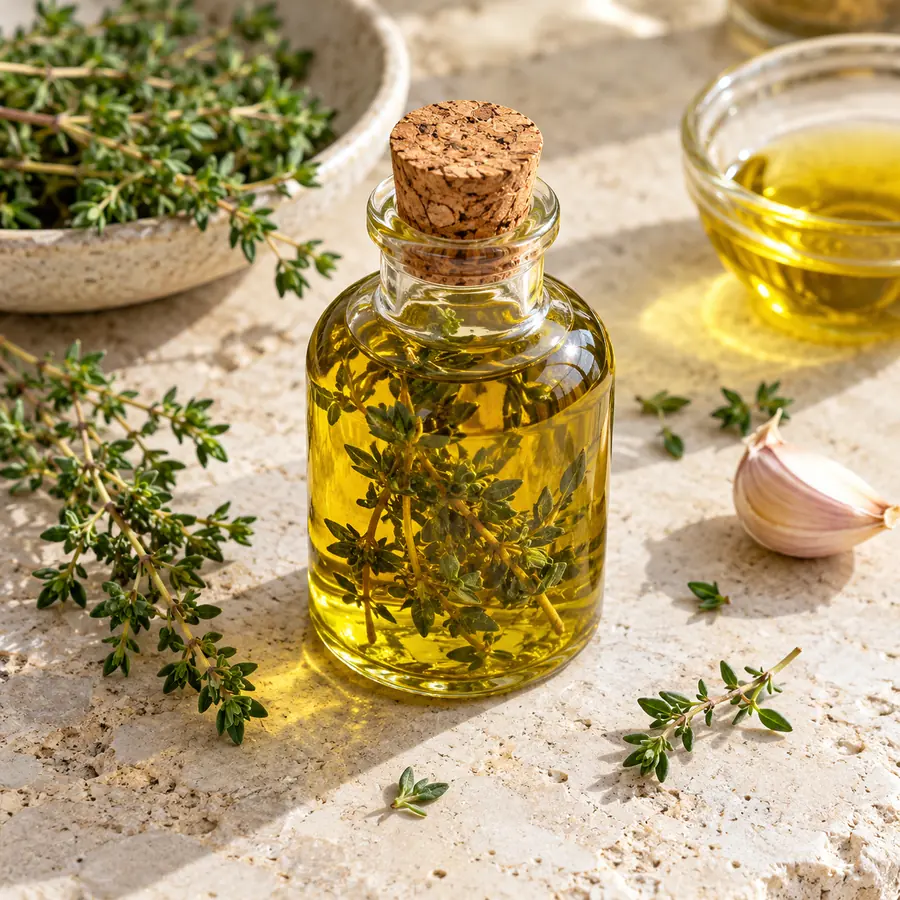
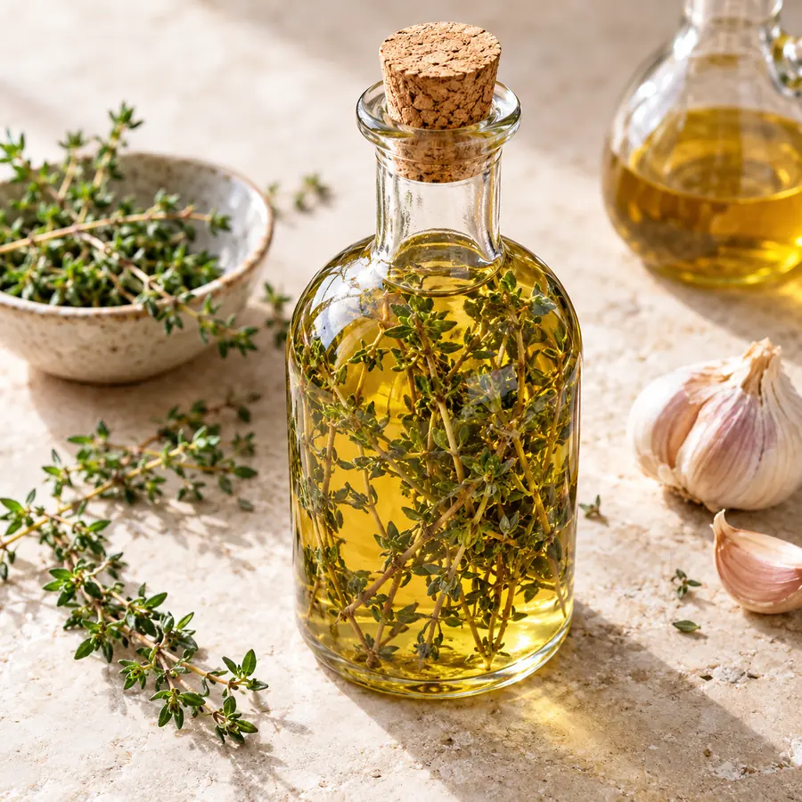
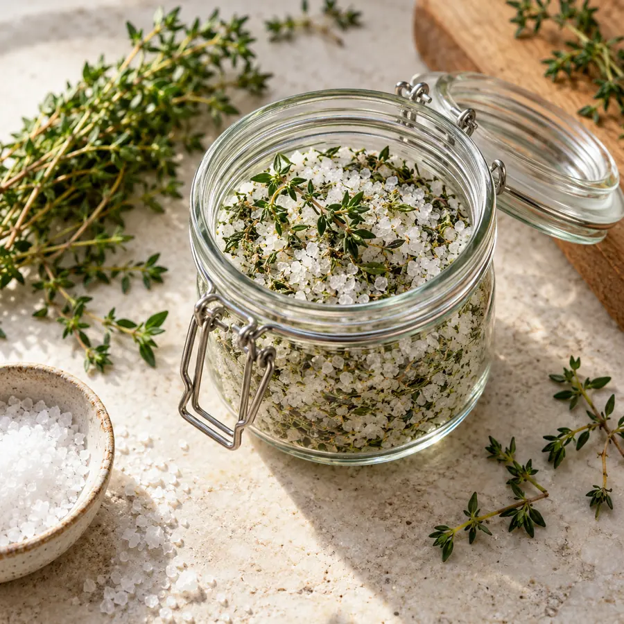
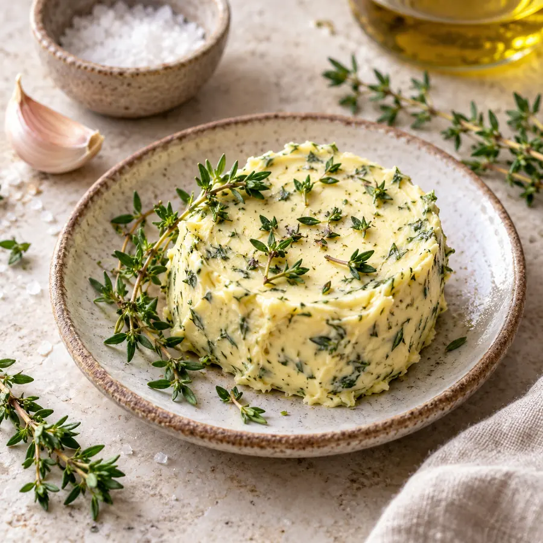

Praktisches Zubehör für deine Küchenroutine
In meiner Amazon-Rezepteliste findest du Gläser, Mixer, Vorratsbehälter und weiteres Zubehör für die Zubereitung.
Amazon-Rezepteliste →Affiliate-Link
Sechs einfache Küchenideen mit dem aromatischen Kraut – von Honig bis Kräuterbutter.

KI
 KI
KIIn meiner Amazon-Rezepteliste findest du Gläser, Mixer, Vorratsbehälter und weiteres Zubehör für die Zubereitung.
Amazon-Rezepteliste →Stöbere durch weitere Themenwelten und entdecke neue Lieblingsideen.

KIEinfach zubereitet und alltagstauglich erklärt.

KIEinfach zubereitet und alltagstauglich erklärt.

KIEinfach zubereitet und alltagstauglich erklärt.

KIEinfach zubereitet und alltagstauglich erklärt.

KIEinfach zubereitet und alltagstauglich erklärt.

KIEinfach zubereitet und alltagstauglich erklärt.
 KI
KI Drinks & Smoothies
Drinks & Smoothies Warme Drinks
Warme Drinks Overnight Oats
Overnight Oats Suppen
Suppen Selbstgemacht
Selbstgemacht Hausmittel
Hausmittel